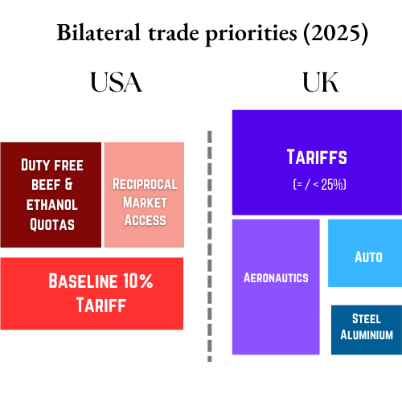

US-UK trade summary (2024)
In 2024, US goods imports from the UK were $68.1 billion, representing ~2.2% of total US merchandise imports. ~21.7% of UK exports were destined for the US in 2023–24 ~13.2% of UK imports were sourced from the US during the same period. US goods exports to the UK were $79.9 b in 2024, making up around 2.6% of total US goods exports.
US- UK Trade: Key sectors
UK → US Goods: exports valued ~£59.3 b in 2024 (~16.2% of UK goods exports). Top categories include machinery, transport equipment, cars, pharmaceuticals, chemicals, aircraft.
UK → US Services: services export (~27% of UK services exports) focused on financial, business services, tech, film/tourism.
US → UK Goods: ~$79.9 b in goods exports: oil, gold, aircraft, machinery, pharmaceuticals. US maintains a goods trade surplus of ~$11.9 b with UK in 2024.
US → UK Services: US services exports to UK $183.8 b, with modest US services surplus ($3.6 b).
Key event timeline
February 2025
Feb 27: Trump and PM Starmer meet and announce intent to negotiate a bilateral trade deal; express optimism.
March 2025
March 12: US imposes 25% tariffs on Steel, Aluminium and derivatives.
Active Tariffs: 25% on Steel and Aluminium
April 2025
April 2: US launches global tariffs: 10% baseline, 25% on autos, 25% on metals; UK demands carve-outs; threat of retaliatory list emerges from the PM office.
Active Tariffs: 25% Steel and Aluminium, 25% Auto, 10% baseline
May 2025
May 8: UK and US announce Economic Prosperity Deal: UK quotas on beef/ethanol, auto tariff carve, aerospace exemption; tariff relief begins.
Active Tariffs: 10% Baseline, Auto, Aero; 25% Steel and Aluminium
May–June: Implementation progress accelerating; Trade Secretary Reynolds confirms elimination of auto and aerospace tariffs; metals quotas under negotiation.
Active Tariffs: 10% Baseline, Auto, Aero; 25% Steel and Aluminium
July 2025: Deal preparations complete; UK still negotiating supply-chain certification for metals quota; future sector deals (IP, semiconductors) under discussion.
Active Tariffs: 10% Baseline, Auto, Aero; 25% Steel and Aluminium
August 2025
September 2025
October 2025
November 2025
December 2025
January 2026
Jan 17: U.S. presidential announcement threatened a 10% tariff on several European countries (UK included) who have deployed troops to Greenland in the light of U.S. annexation threats. These tariffs will come into effect from Feb 1, escalating to 25% in June.
Jan 18: UK officials publicly condemned U.S. tariff threats; market commentary noted short-term negative reaction in London equities tied to tariff risk.

Understanding USA’s Priorities
Priority
- Protecting domestic industry and expanding Market access: US has a trade surplus with the UK- one of the only top partners to have that. US aims to protect it and expand it by seeking UK investments in US manufacturing sector
- Offsetting quotas on UK beef & ethanol – UK removes certain tariffs: duty-free quota for US beef (up to 13,000 t) and ethanol (1.4 b litres); US reallocates quota
- Steel & aluminium tariffs unresolved – 25% US metals tariffs remain effective; UK excluded from doubling to 50% but still outside quota until supply-chain certification secured
- Investment & aerospace procurements – US aims increased purchases of UK-manufactured Boeing aircraft and vice versa; part of strategic optics
- Trade regulatory alignment – Non-binding “Economic Prosperity Deal” outlines long-term regulatory dialogue, standards alignment, digital trade pathways.
Understanding UK’s Priorities
Priorities
- Avoidance of 25–50% auto & metals tariffs – UK fought to exempt from global tariffs applied April 2; secured favorable carve-outs for autos & prevented steel from doubling to 50%
- Economic Prosperity Deal (EPD) Terms – Secured partial agreement May 8, covering quotas for autos/beef/ethanol and tariff reductions; non-binding but key to formal negotiations.
- National pride & retaliatory readiness – UK prepared reciprocal tariffs list of 417 items; rhetoric emphasised protecting national interest with “sharp teeth”
- Sector vulnerabilities & business concerns – UK businesses concerned goods and services trades may be impacted by US tariffs; especially energy and pharmaceuticals sectors.
References
- https://assets.publishing.service.gov.uk/media/688ac6201affbf4bedb7b119/united-states-trade-and-investment-factsheet-2025-08-01.pdf
- https://assets.publishing.service.gov.uk/media/681d327d43d6699b3c1d2a9d/US_UK_EPD_050825_FINAL_rev_v2.pdf
- https://commonslibrary.parliament.uk/research-briefings/cbp-10240/
- https://www.hklaw.com/en/insights/publications/2025/07/status-of-us-bilateral-trade-negotiations-as-the-deadline-approaches
- https://www.congress.gov/crs-product/IF11123
- https://ielp.worldtradelaw.net/2025/05/the-general-terms-of-the-us-uk-trade-deal.html
- https://www.whitehouse.gov/fact-sheets/2025/05/fact-sheet-u-s-uk-reach-historic-trade-deal/